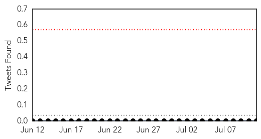
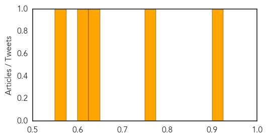
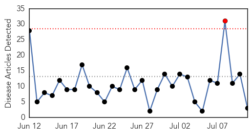
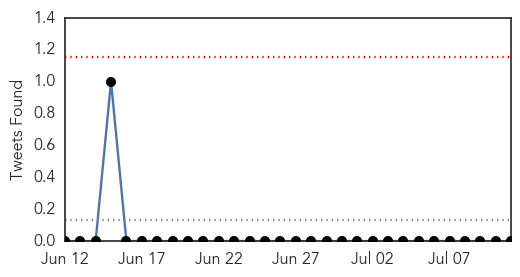

Measles
30-Day Web Trend
2 alerts, 3 warnings

30-Day Twitter Trend
0 alerts, 0 warnings

Article Locations

Article Confidences
Top Articles:
- 0.901
- Measles case misidentified on Martha’s Vineyard
- 0.758
- Martha's Vineyard measles diagnosis wrong, health officials say
- 0.625
- Ahead of Yemen ceasefire, UNICEF sounds alarm about impact of crisis on children
- 0.621
- Ahead of Yemen ceasefire UNICEF sounds alarm about impact of crisis on children
- 0.557
- Measles and mumps infections were associated with decreased risks of mortality from cardiovascular disease.
Top Tweets:
-
No tweets found for Jul 11, 2015
Influenza
30-Day Web Trend
1 alerts, 0 warnings

30-Day Twitter Trend
0 alerts, 0 warnings

Article Locations

Article Confidences

Top Articles:
Top Tweets:
- 0.811
- Intradermal Influenza (Flu) Vaccination http://t.co/JI8TCGaBrx